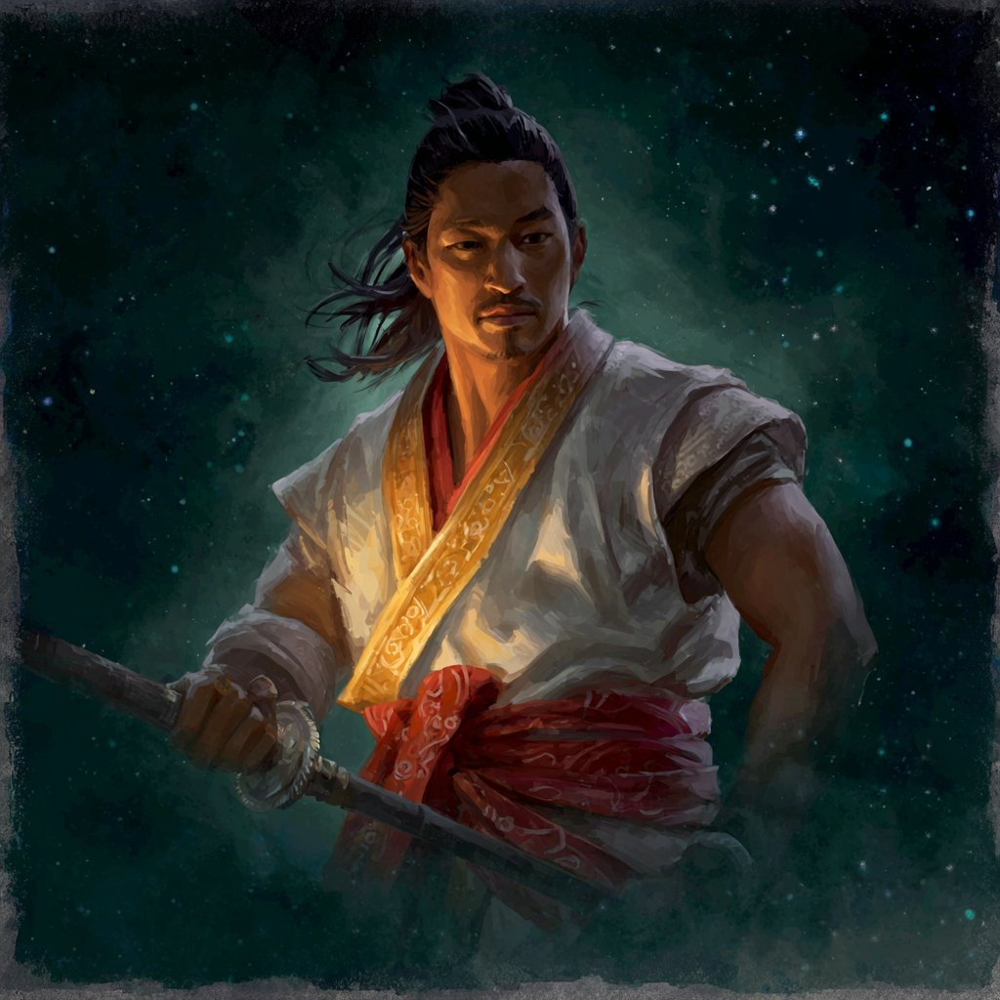

Confidential Character Dossier · City of the Rich Frog
Ikoma no Hosokawa Otaadopted of the Hosokawa · sworn to Ikoma Kenji · born to a name now unspoken
of the Lion Clan, by adoption · once of the Scorpion, by birth · novice of the Yogo Penitent Order, released · bushi by role, monk by formation · bound at character creation, untested in play
Lion ClanHosokawa, by adoptionYogo Penitent Order · Rank 1Honor 38Glory 42Status 35

Ota at readiness · the golden sash · the yari at first grip
I. Identity & Standing
Ikoma no Hosokawa Ota is a samurai in the service of Ikoma Kenji, formally adopted into the Hosokawa vassal family of the Lion clan. He was born and raised among the Scorpion, of the Yogo family, and trained in the Yogo Penitent Order — a monastic sect of the Brotherhood of Shinsei to which the irredeemable are sent to seek redemption through service. He has been released from the monastery, but the formation is permanent. His role is bushi; his school is something other than what bushi usually means. He has not yet been played in the field.
Physical Description
Ota is a tall, broad-shouldered man in the early prime of life, with the heavy build of one who has done labor as well as drill. His skin is warm-toned and weathered; his hair is long, dark, drawn up into a high knot in the samurai style with strands habitually escaping at the temples; he wears a short, deliberate moustache and a small chin-beard. His eyes are dark and steady, set in a face that has learned the cost of expression and rations it. He dresses for work rather than display: a simple white kimono of good cloth, a red sash about the waist, and over the shoulder a heavy golden sash worked with fine red thread — the one extravagance, and one that does not belong to the Hosokawa palette. His yari is the same. The sash on the yari matches the sash he wears. He notices when others notice. He never explains.
Manner of Presence
He is grounded, in the technical sense: he responds to provocations rather than reacting to them, and his responses are considered — though sometimes that consideration occurs in fractions of a second. He speaks little, and what he says is weighed before it leaves him. Under pressure his voice does not rise; his bearing does not falter; he becomes harder to read rather than easier. He is courteous but not warm. He will not be touched by others while disregulated or in physiological distress, and he positions himself in rooms so that he will not have to be. He stands the way the Penitent Order taught him to stand. Earth is his default stance and his default posture in conversation alike.
Current Obligation & Drive
Ikoma Kenji sought out the Yogo monastery. He has felt cornered by his beloved brother, who refuses to recognize reality. Kenji needs an ally who can help him overcome his aversion to conflict — and, if needed, initiate that conflict.
Current giri — the debt that bought him out of the monastery
Ota longs to be a peacemaker, but does not have the liberty to contest his lord's framing nor leave his lord's service to serve others more in keeping with his desire.
Current ninjō — the wish his role cannot accommodate
Standing Personal Convictions
Bushidō is something one must strive for, and must fail at.
Foundational disposition — his answer to the question of the Code
Let death come, if it must, before I am made to do the irreversible thing.
From Step 20 — the death he hopes for
II. Mechanical Profile
Rings
Earth
2
stance & ground
Water
1
soft — a known vulnerability
Fire
1
soft — he does not burn easily
Air
3
deflection & concealment
Void
3
the monastery's gift
An unusual distribution for a bushi: Air and Void each at 3, Earth at 2, Water and Fire each at 1. The Penitent Order shows clearly in the dice — a build optimised for endurance and spiritual leverage rather than for striking pools or social charm. Earth is his standing stance; Void powers the school ability and most of the rituals; Air carries his concealments. The two soft rings are the mechanical record of who he was not allowed to become.
Derived Values
Endurance
6 (Earth + Fire)
Composure
6 (Earth + Water)
Focus
4 (Fire + Air)
Vigilance
2 (Water + Air) / 2
Void points (max)
3
Social Standing
Honor
38
below the Hosokawa floor; the heritage cost is visible
Glory
42
a name not yet made; a name once unmade
Status
35
a samurai's basic standing, no more
Carried Strife — 5 of 6
He carries five strife at creation. He is one push from unmasking. This is not a fresh sheet; this is the sheet of a man arriving at his post already most of the way to his limit. Whoever sits across the table from him in the first scene of play will be sitting across from a man whose composure is a wire pulled almost to its breaking note.
School, Role, Stance
Role
Bushi.
School
Yogo Penitent Order — Rank 1. A Scorpion-clan monastic sect of the Brotherhood of Shinsei, training those who have committed the unbearable to seek redemption through service. The school's ability is Oath of Sacrifice: once per scene, after he defends against damage or suffers a critical strike, he may unleash his current kihō, ending its enhancement and resolving its burst as though he had bonus successes equal to his school rank plus the fatigue received or the severity of the strike. Subsequent uses in the same scene cost 1 Void point apiece.
Default Stance
Earth.
Bushidō — paramount
Honor.
Bushidō — less significant
Compassion. The tension between these two is the engine of the character: honor he serves; compassion he longs to serve and cannot reach.
Techniques
Technique
Type
Function
Oath of Sacrifice
School Ability
Once per scene (more by Void): unleash kihō burst on a defensive trigger, scaled by harm received.
Veiled Menace Style
Kata (Void)
One-handed melee or unarmed attack: against an unaware or Disoriented target, deliver a critical strike scaled by opportunity. The Penitent Order's argument that the monk's hand is also the assassin's hand.
Snapping Branch Strike
Kata (Earth, Fitness)
Blunt weapon or polearm: TN 3 Fitness (Earth) check; on success, 5 + bonus damage with deadliness 2, and on opportunity may push the target one band per pair spent. Uncle Ota's gift.
Divination
Ritual (Void, Theology)
Downtime: TN 2 Theology (Void) targeting one character to see an omen of their near future, granting a kept ring set on their next check in a chosen skill group.
Threshold Barrier
Ritual (Void/any, Theology)
Downtime: TN 2 Theology check to bar a threshold against a class of being chosen by ring (spirits, Tainted, undead, animals, humans). The Penitent Order's wards, made portable.
Distinctions, Adversities, Passions, Anxieties
Type
Trait
Distinction
Support of the Yogo — he was released from the Order, not severed from it. The monasteries will receive him; their hospitality, libraries, healers, and stables are open to him; on checks of rapport with members of the Order, he rerolls up to two dice.
Distinction
Ardent Leader — he speaks with a confidence that is hard to ignore. People hear him, even when they outrank him; people are not, however, obliged to obey, and his words may carry consequences he did not intend.
Adversity
Whispers of Doom — he is known, but not for the right reasons. Those who do not know him personally assume the people around him will perish, even if he himself walks on. The shape of the rumour is correct. The reason given for it is not.
Passion
Generosity — he delights in selecting and preparing a gift that is a perfect match for the recipient. The same eye that taught him to read a person for harm now reads them for kindness.
Anxiety
Dark Secret — if his secret were ever to surface, his glory would collapse and his status with it, and his ancestors and descendants would be disgraced alongside him. Mechanically tracked from his first day in play. After any check to assert his will over himself or others, he receives 3 strife; the first time per scene, he gains a Void point.
Anxiety
Claustrophobia — he refuses to enter enclosed spaces with no easy exit, and is distracted and anxious when he must. After any check requiring him to enter such a space, he receives 3 strife (and on the first time per scene, gains a Void point). He buried his sister alive. He has not buried himself since.
Notable Equipment
Yari, with the golden sash — readied at start. The sash on the haft is bold gold worked with fine red thread; it matches the one at his waist; it is not Hosokawa colour. It is the first thing strangers notice about him.
Animal Helm (Lion) — the visible marker of his association with the Ikoma family. Wargear: while leading a cohort in mass battle, if he is removed by Cut Off the Head, the cohort's panic is halved.
Knife · shuriken (3) · whip — the concealable tools of a man who learned where to hit before he learned where to stand.
Common Clothes — physical armour 1. He is not in armour at start.
Omamori (Boon of Kisshōten) — once per session, by spending a Void point, he counts as having either Dangerous Allure or Kisshōten's Blessing until end of scene.
Lantern (personal) · traveling pack — furoshiki-wrapped: blanket, bowl, chopsticks, four days' rations, flint and tinder.
Wealth: 200 zeni.
III. Operating Disposition
Ota's mechanical sheet says bushi and his school sheet says monk; the character at the table is the join. The Penitent Order trained him to stand still under provocation, to wait, and to act only when action was necessary. The Hosokawa adoption gave him a banner. Ikoma Kenji's service gave him a direction. He has the polearm of his uncle, the kata of the Order, and the rituals of a temple acolyte. He has not yet been asked to use any of it in earnest in his new name.
In a Court
He is not a courtier and does not pretend to be. His Courtesy is unranked; his Performance is one, his Culture is one. What he has, instead, is Ardent Leader and three Air — he will be heard when he speaks. The combination is interesting and dangerous: he can land a sentence in a room of his betters that they cannot quite dismiss, but he cannot manage the consequence after it lands. His role at court is best as Kenji's grounded second, the one who says the one true thing when everyone else has been talking around it.
In the Field
The yari is his primary weapon, gripped two-handed, range two. Snapping Branch Strike from Uncle Ota gives him a reliable Earth-stance opener that combines damage and positioning. Earth stance bars him from taking criticals on his sheet so long as his fatigue allows it; Oath of Sacrifice turns the criticals that do land into the launch mechanism for his kihō burst. He fights like the Order taught: absorb, hold, release. He is not a duellist. He is a man who waits to be struck and then answers.
In a Sacred Place
This is where the Penitent Order training shows most clearly and where the rest of the party will be most surprised. He can perform Divination on a Theology (Void) check; he can ward thresholds against five categories of being, including humans, by his Void; he reads omens, he prepares wards, he keeps fasts. The Hosokawa do not know he can do this. Kenji does. The monastery does not have to be told.
When Pressed Beyond Composure
Strife 5 of 6 at the opening bell. His giri requires him to be available to Kenji as an initiator of conflict; his ninjō recoils from initiating any. The first scene that puts pressure on this seam will spend his last point of composure and unmask him. The Penitent Order taught him what to do when unmasked: he sits down, he meditates, he removes himself from the situation, and he does not allow anyone to lay a hand on him while he is regulating. He will, at need, walk away from his lord's table to do this. Kenji knows. Others do not.
IV. Interior Architecture
The interior is organised around a single buried fact and the disciplines that have grown over it. He is a man who has done something he cannot undo and has been given a way to keep living. The way is service. The price of the way is that the doing is permanent and the living is provisional.
What He Was Taught at the Monastery
Yogo Kitohime, his teacher, never asked him what he had done. She never judged him. She knew his burden intimately, the way he came to know hers. What she gave him, instead, was a discipline: the present, not the past. Breath, not history. The Order's argument is that the soul that has done the irredeemable thing must learn to live in the moment after the thing, and the moment after that, and to refuse the gravity that wants to pull the soul back to the moment of the thing itself. He has not mastered this. He has practised it for years. He can do it for hours at a time. He cannot yet do it through a full day of court.
What He Cannot Undo
The fact behind the Dark Secret
He buried his sister alive. He tries not to remember. He cannot help it. Part of him cannot shake the horror; part of him refuses to allow himself ever again to be similarly trapped. This is the seed of his Claustrophobia. It is the seed of his refusal to be touched in distress. It is the seed of the death he hopes for in Step 20 — to be killed before he is required to do anything similar a second time, in the service of his current lord.
What He Hopes For
To be a peacemaker. To select and prepare the right gift for the right recipient. To stand still in the middle of a storm and let the storm pass over him. To die before he is asked to do the one thing he cannot bear to do twice. To deserve, eventually, the name his uncle gave him. None of these hopes are compatible with his giri to Kenji as currently written. He knows this. He serves anyway.
The Tension That Defines Him
Honor paramount, Compassion less significant.
Sheet
He has placed Honor above Compassion deliberately. Not because he loves Honor more — he does not — but because Compassion, in his life so far, has been the door he has been told to close. The Order taught him discipline before mercy. His lord requires service before sentiment. The Hosokawa adoption gave him a name to keep from disgracing. He has decided that he will discharge Honor's debts first, and reach for Compassion only inside what Honor permits. The gap between the two is where his character will be played.
V. Bonds & Household
Ikoma Kenji — his lord, his liberator, the man whose service is his giriLion · Ikoma
It was Kenji who sought out the Yogo monastery. It was Kenji who arranged Ota's release from the Order, the formal adoption into the Hosokawa, and the legal entry into the Lion clan. Kenji is described on Ota's sheet as feeling cornered by a beloved brother who refuses to recognize reality; Kenji needs an ally who can help him overcome his aversion to conflict, and, if needed, initiate that conflict for him. Ota is that ally. The relationship is structured rather than warm. Kenji has spent something on him and expects a return. Ota will provide it. What Ota feels about Kenji privately has not been recorded; what he does for Kenji is the whole of his current life.
Kenji's brother — named adversary, unnamed in the fileLion · Ikoma
The person who refuses to recognize reality, and against whom Ota is being positioned as Kenji's instrument of necessary conflict. The dossier does not name him. He is the future scene Ota's giri is pointed at. The shape of the eventual confrontation — whether it is courtly, martial, ritual, or something else — is a question for play.
Yogo Kitohime — teacher, monastery, his only safe witnessScorpion · Yogo · Penitent Order
The monk who trained him at the Yogo Penitent Order. She never asked what he had done; she focused him on the present rather than the past. She knew his burden the way he came to know hers — the Penitent Order is a place where everyone has done the thing, and no one talks about it, and the silence is the medicine. Ota's Support of the Yogo distinction means that the monastery remains open to him: hospitality, libraries, healers, stables. Kitohime is not on his sheet by name as a Bond, but she is the person to whom, in the dossier, the phrase he need but ask is attached.
Uncle Ota — namesake, polearm master, missing in serviceScorpion · Yogo
An accomplished polearm master who was delighted to teach his young namesake what he could. He left on his lord's business when Ota was a young teen and never returned. Whether he died in service, was disappeared by his lord, or chose not to return is unknown to Ota. Snapping Branch Strike on the technique list is his lesson, preserved. The yari grip is his. The honor cost on the heritage roll (-5) suggests the manner of the uncle's disappearance was not clean — or that Ota carrying the name openly is itself a small infraction against someone's reckoning. The dossier marks the heritage with the same name. The young man has inherited both the skill and a question he has not been able to ask.
His sister — named only to himself, the buried oneScorpion · Yogo
The fact behind the Dark Secret. As a child, before any of this happened, he and his sister were close enough that they made many of their own theatre productions around the home, sparked by what little professional theatre they had seen. The bond was real. What followed unmade it. The Order received him afterwards; the family did not. Her name does not appear on the sheet. She is present as the gravity at the centre of his Anxieties and the second clause of his Step-20 death wish.
The Hosokawa — his adoptive vassal family, polite, waryLion · Hosokawa
A vassal family of the Lion, under the Ikoma. They received Ota at Kenji's instigation. The reasons for the adoption were made opaque to them: they do not know who Ota was, and they cannot help but believe there is darkness in the arrangement, and sometimes they can see that darkness in his eyes. They have given him their name and the legal status that comes with it. They have not given him their trust. His Whispers of Doom adversity is sourced here as much as anywhere — the rumour among the Hosokawa is not that he is bad luck for himself; the rumour is that he is bad luck for those near him. The rumour is not wrong about the shape of the situation. It is wrong about why.
The Scorpion Clan — the relationship he no longer has — severed, but not safelyScorpion · former
When the monastery released Ota into Kenji's service, the release was full. There is no formal Scorpion claim on him; the Hosokawa adoption was made to close the legal door. That does not mean the Scorpion will not, someday, try to reinsert themselves. The Yogo family in particular knows what was done and who did it. The Order knows. Some lord, somewhere in Ryoko Owari or its dependencies, may yet have an interest in a former Yogo who learned the Penitent disciplines and now wears the Lion's helm. The campaign door is open.
VI. What He Carries Hidden
Ota's bushidō register is Honor paramount. He is not, by formation, a liar — the Penitent Order does not train deception, it trains stillness — but he is by necessity an extremely careful manager of what is known about him by whom. A partial inventory of what most people around him do not yet know:
That he was born Yogo. The Hosokawa adoption was made specifically to close this door. The legal record will support him. The face and the formation may not, to a careful observer of Scorpion training.
That he is a graduate of the Yogo Penitent Order. The school's existence is not a secret; that one of its products is now an Ikoma vassal in the City of the Rich Frog is something a knowledgeable Scorpion would find very interesting.
The act behind his Dark Secret. No one outside the Order and Kenji knows the specifics. He will not say. The Anxiety will pull strife from him in any scene that probes near it.
That he can perform divinations and ward thresholds. The Hosokawa do not expect a bushi to do these things. The first time he does, openly, will be an event. He will likely do it because someone needed it done.
That his namesake uncle's disappearance is a private wound. The young Ota has not been able to ask the question. He keeps the polearm grip. He keeps the name. He does not raise the subject.
That his death wish is specific. He hopes to be killed before he is required to do, in Kenji's service, something irreversible and terrible. He has not told Kenji this. Kenji may have guessed.
The bold golden sash on the yari and at his waist. It is not Hosokawa colour. It is described in the dossier as unusual for the Hosokawa. He has not explained its provenance. The dossier does not say either. It may matter that it goes unexplained.
VII. Life Timeline
Specific dates are not on the sheet; the order is. What follows is the chronology the file implies, reconstructed from the answers to the twenty questions and the heritage roll.
Childhood — Yogo lands
Born Yogo, with a sister, in a household where theatre was rare
As a child he did not get to see much theatre; what little he did witness sparked his imagination, and he and his sister made many of their own productions around their home. The bond between them was the formative one of his early life. The Performance skill on his sheet is the residue of those games.
Adolescence
Uncle Ota teaches the polearm
His namesake uncle, an accomplished polearm master, took delight in teaching what he could to the young namesake. Snapping Branch Strike on the technique sheet is the residue of those lessons. Then his uncle left on his lord's business and did not return. Whether killed, disappeared, or detained is unknown to Ota. He has not asked. He has kept the grip.
The Hinge
He buries his sister alive
The act behind the Dark Secret. The file does not give the circumstances — whether forced by an order, mistaken for necessary, undertaken in fear, or done by his own decision. What the file gives is that he remembers it, tries not to, and refuses to be similarly trapped himself. This is the moment after which everything else is consequence.
After the Hinge
Entry into the Yogo Penitent Order
By the Order's rule, those who have committed the unbearable may plead their case to the Order; if the Order judges the cause it can be set against to serve the good of Rokugan by its own cryptic measure, it accepts them and sends them out, even unto death, in service of that cause. Ota was accepted. He was trained. Yogo Kitohime never asked what he had done. He grieved his greatest humiliation, dedicated himself to the monastic arts, and found excellence in the practice of air kihō.
Recent past
Ikoma Kenji arrives at the monastery
Kenji sought out the Yogo monastery in search of an ally. The file does not say how Kenji learned of Ota specifically; it says only that Kenji came, that the cause Kenji presented was the conflict with his brother, and that the Order judged it served the good of Rokugan. Ota was released to Kenji's service. The release was full: no Scorpion claim, no further obligation to the Order beyond the Support distinction.
Just before play
Formal adoption into the Hosokawa
Kenji had the Hosokawa, a vassal family under the Ikoma, formally adopt Ota and bring him into the Lion clan legally. The reasons were made opaque to the family. Ota became Ikoma no Hosokawa Ota. The Lion helm was issued. The legal door behind him was closed.
The opening of play
A man arriving at his post, five strife already carried
He stands in Lion colours, with a Scorpion's training, a monk's stillness, and a sister's grave behind him. He has not yet been asked to do the thing he was brought here to do.
VIII. Operational Environment
Ota's theatre is the City of the Rich Frog — Toshi sano Kanemochi Kaeru — and the contested ground of the three-clan neutrality that holds it together. The Lion are the city's deepest investors and the largest presence; the Dragon hold the Shrine district and dispute the Lion's primacy at every opportunity; the Unicorn have, in the last decade, made the violet roofs of their district multiply quietly. The Kaeru-otokodate keep order, with their own loose definition of it. The Scorpion are not formally present in force, but Ryoko Owari is downriver, the trade is brisk, and the recent appointment of a Scorpion as Emerald Magistrate of the city is a matter the other clans have not stopped grumbling about.
The Lion in the City
Ota's adopted clan dominates by numbers and longest investment. Akodo Minami, a relatively young samurai-ko, holds the highest Lion rank in the city. The Ikoma are present in the city's archival and historical apparatus; the city's history is in considerable part the history they have written. Ota's role within the Lion presence is as Kenji's man — that is, as the Ikoma's man, attached to a specific intra-Ikoma project rather than to the wider clan's positioning.
The Scorpion at the Edge
The clan he was born into is not formally garrisoned here, but its interests run through the city via the Emerald Magistrate's office and the Ryoko Owari river trade. For Ota personally, the Scorpion's absence-by-presence is the question. He has been formally adopted out. The Order has formally released him. The legal door is closed. Whether the Scorpion or the Yogo or some interested party in the Order itself will respect that closure for as long as Ota's presence is operationally useful to them is the open question of his backstory's second act.
The City Itself
A river-trade hub, three-clan-contested, run politically by a delicate Imperial neutrality and practically by the Kaeru-otokodate. Opium dens are discovered and shuttered every few months; merchants are fined; the magistrate is swift in form and slow in consequence. The city is exactly the kind of place where a man with Ota's particular set of skills — quiet, polite, capable of standing very still while watching very carefully — disappears into the architecture until he is needed. Whoever needs him first will set the second act in motion.
IX. Possible Trajectories
He has not been played yet. What follows is not prediction but a sketch of the lanes the character can grow into, given his sheet and his situation. The campaign will choose among them, or invent others.
The Quiet Threads
Becoming Hosokawa in the eyes of the Hosokawa. The family received him on Kenji's word, with no explanation. Whispers of Doom follows him at adoption; the family watches for the darkness they have been told to expect. The slow arc of earning their trust, or failing to earn it, is the most reliable character development on the sheet. Each scene of demonstrated competence chips at the rumour. Each scene of demonstrated stillness in the face of pressure builds the alternative reputation he could have.
Establishing what kind of bushi he actually is. The Order trained him in stillness and unleash; Uncle Ota taught him the polearm; the Ikoma helm puts him in mass combat. The first battle in which he is asked to lead a cohort will reveal whether Ardent Leader is the dominant trait or whether the Order's quietism is. The lion helm halves cohort panic if he is removed — a mechanical hint that the campaign has imagined him being removed.
Practising peacemaking inside what Kenji permits. His ninjō is to be a peacemaker; his giri is to be Kenji's initiator of conflict. The space between is the space he will live in. Every scene in which he resolves a thing without violence buys him a small private victory; every scene in which Kenji requires him to escalate spends it. Whether he ends the campaign closer to his ninjō or closer to his giri is the central question of his interior.
The gift-giver's eye. Generosity is on his sheet as a Passion and it is mechanically real: he can find the right gift for the right recipient and remove three strife by doing so. In a court-and-trade city like the Rich Frog this is not a small ability. The same eye that learned to read a person for harm now reads them for kindness. The compound of the two readings is uncomfortably effective.
The Loud Threads
The conflict Kenji needs initiated. The named giri target is a brother of Kenji's who refuses to recognize reality. The dossier does not say who; it does not say what shape the conflict will take. This is the scene the campaign has already been waiting for. When it lands, Ota's giri will require him to be the instrument, and his ninjō will recoil. The strife at five-of-six exists for this moment.
The Scorpion reaching back. The release was full. The Hosokawa adoption closed the legal door. None of this prevents the Scorpion from finding the door inconvenient and looking for a window. A former Yogo with Penitent Order training, now legally an Ikoma vassal under a Hosokawa name in a three-clan city, is an asset; the asset will be tested. The first time someone says Yogo in his hearing and means him personally will be a scene.
The Dark Secret surfacing. Mechanically tracked from day one. If it surfaces, his glory collapses and his status with it; the disgrace extends to ancestors and descendants. The campaign has a pressure point here that it has not yet used. When it does, the question is whether the bonds he has built by then can hold against the unmasking.
The death he hopes for. Step 20 records that he hopes his death is fated before he is forced into doing something irreversible and terrible on behalf of his lord. This is a player flag: he is asking, on his behalf, for the campaign to either kill him cleanly before that scene or to find a route around it. A campaign that takes the flag seriously will play either resolution honestly.
The Tested Edges
The first time he must enter a confined space. Claustrophobia is on his sheet. Three strife per scene that requires it, plus a Void on the first occurrence. The campaign will eventually present a cellar, a tomb, a cave, a closed palanquin. He will go in if he must. The strife load will compound with whatever else is happening in that scene. This is one of the cleanest mechanical pressure points on the build.
The first time he is touched while disregulated. He refuses to be touched by others while disregulated or in physiological distress. The campaign will, by accident or design, breach this — a fellow PC reaching to steady him in a moment of crisis, an opponent grabbing him, a healer trying to render aid. The scene that follows the breach is one of the character-defining inflection points the sheet predicts.
The first time someone asks him directly what he did. The Order never asked. Kenji presumably knows but did not require him to recount. The campaign will, sooner or later, place someone in front of him — an enemy, a stranger, a fellow PC he has come to trust — who will ask. He is Honor-paramount; he is not a fluent liar; the Order trained stillness, not deceit. What he answers will tell him something about himself he does not yet know.
What He Will Not Be
He will not be a swaggering Ikoma boast-keeper. The family's tradition is loud; his formation is quiet, and the boast-keeping skills are not on his sheet (Performance 1; Courtesy 0). The lion helm is a fact, not a posture.
He will not be a duellist. His Fire is 1; his Melee is 1. The yari is his answer to violence, and the Order's answer to violence is to wait for it and absorb it rather than to seek it. He fights well when fought; he does not fight first.
He will not be untouched by what is coming. He arrives at his post already five-strife-deep, carrying a Dark Secret, hoping for a clean death, sworn to a man whose project he privately disagrees with. The campaign is going to press on every one of those things. What is left at the end is what he becomes — or what he leaves behind for the Hosokawa to remember.
From Step 20 of Character Creation
Ota hopes that his death is fated before he is forced into doing something irreversible and terrible on behalf of his lord. The player has written the death wish into the build. It is a request. It is also a warning. The character is asking the campaign to find him a way out before the door closes a second time.